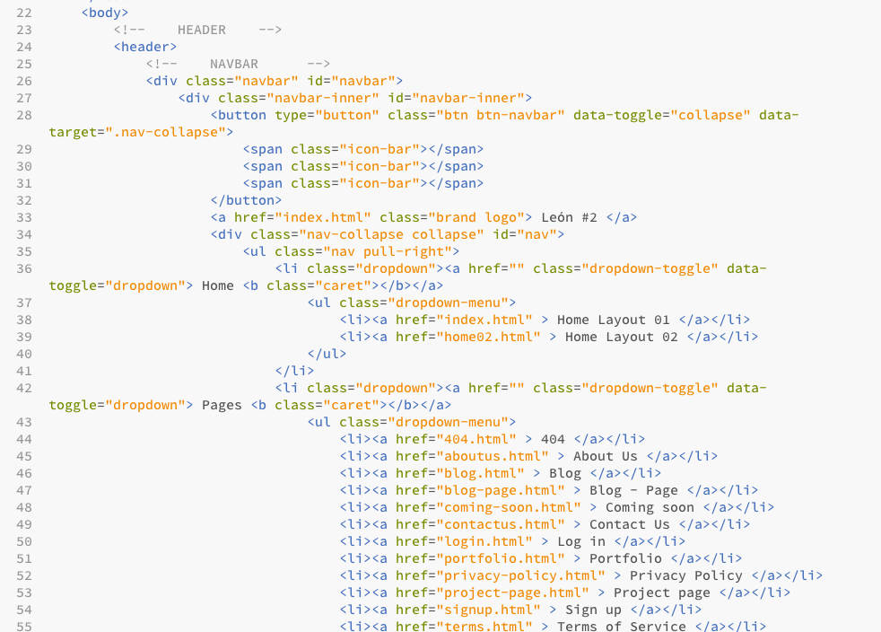
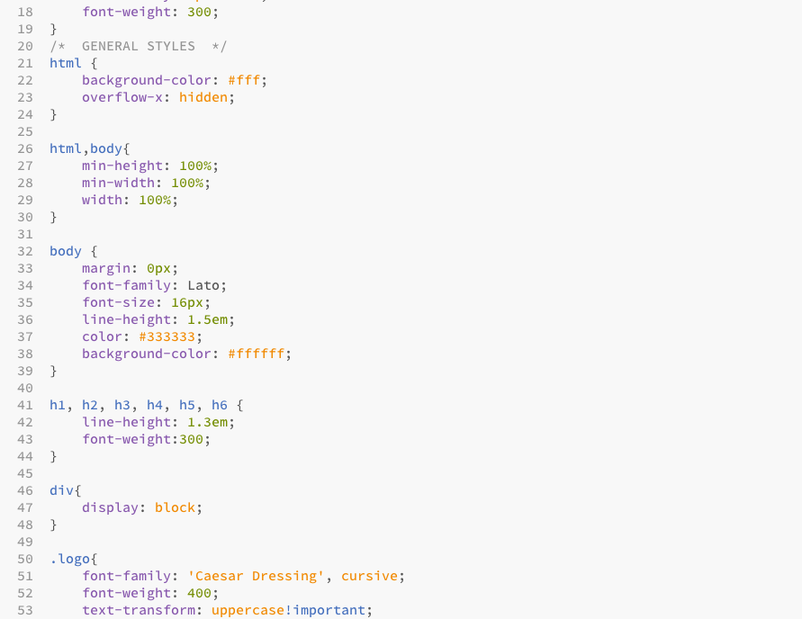
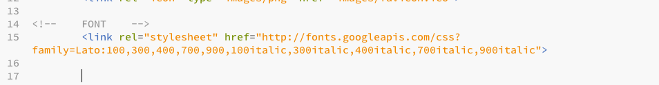
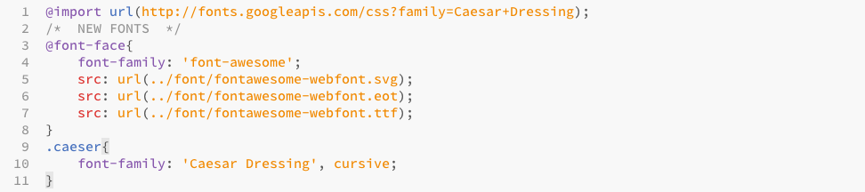
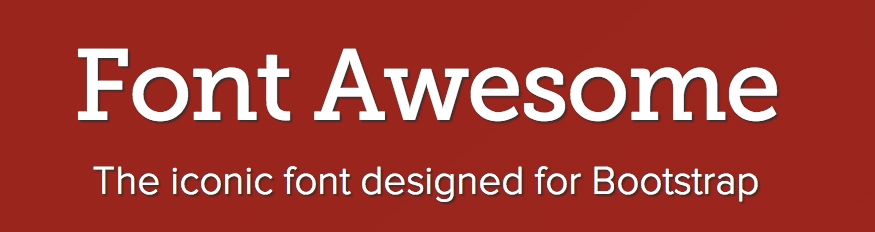

“LEÓN #2 · Responsive Template” Documentation by “Sahil Gandhi” v1.0

Created: June 2013
By: Sahil Gandhi
Email: gandhi.sahil@hotmail.com
Thank you for purchasing my theme. I am very glad that you like it. If you have any questions that are beyond the scope of this help file, please feel free to contact me. Thanks!
Table of Contents

A) HTML Structure
This is a quick guide to use and understand the theme. The template is really simple to modify so I am sure you won't have any problems.
The theme is a One Page Responsive layout. Was designed using HTML5, CSS3, and Twitter Bootstrap 2.3.1. Was tested in the major browsers and devices.
All files on the theme are commented and are really easy to configure. Take a look to the HTML structure:

HTML List
B) CSS Files and Structure
The theme includes 9 CSS files.
This theme was created using Twitter Bootstrap 2.3.1 version. I have kept all major configurations by default.
Please note, the theme works fine on Internet Explorer but wasn't tasted in depth.
Take a look at the CSS structure.

CSS List
C) Theme Configuration
GOOGLE FONTS
LEÓN uses one predefined Google Font, "Lato" and "Caesar Dressing". If you want to change this value, you have to replace all the references in the styles.css file.
In Google Fonts website you can find the code to paste in the theme. Choose the desired font, click in the "Quick Use" link and copy and paste the code.


COLOUR Scheme
The theme makes use of basic colours, red, white and black.
Red : #ED4C2A White : #FFFFFF Black : #333333
FONTAWESOME
This theme uses FontAwesome as a support font. You can use the font by adding the following line in your code.
‹i class="icon-name"›‹/i›
Please refer to the index.html to see a complete example. See the list of total icons in the official site: FontAwesome Site
D) JavaScripts/JQuery
The template uses jquery plugins to get a few things done.
CSS List
- bootstrap.js (Standard js file included with Twitter Bootstrap framework)
- jquery-1.9.1.js (jQuery site)
- masonry.pkgd.js (Masonry)
- modernizr.custom.js (Modernizr)
- jquery.quovolver.js (Quovolver)
E) Sources and Credits
IMAGE SOURCES
Thank you so much for purchasing this theme. As I said at the beginning, I'd be glad to help you if you have any questions relating to this theme.